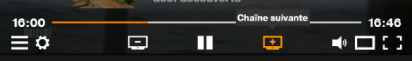

Contenu non-textuel
S’assurer, qu’une alternative aux contenus non-textuels soit proposée à l’utilisateur
Définir des équivalents textuels #
Cible : les personnes déficientes visuelles, les personnes malentendantes ou déficientes cognitives et les moteurs de recherche.
Quand : dès la conception et pendant le développement.
Description :
Mettre en place des alternatives textuelles pour tous les éléments informatifs non-textuels (alternatives aux images, icônes). De même, prévoir des scripts ou des sous-titres pour les contenus audio ou vidéo.
Exemple :
Dans la capture ci-dessous, il faudrait par exemple prévoir dès la conception les textes alternatifs pour chaque bouton :
- « menu »,
- « réglages »,
- « chaîne précédente »
- « couper le son »
- …

Rendre accessible les pistes audio ou vidéo #
Cible : tout le monde, et en particulier les personnes déficientes visuelles, cognitives et auditives et celles qui maîtrisent mal le français.
Quand : lors de la conception et lors du développement.
Description :
Pour être accessibles, les contenus multimédias doivent :
- proposer une transcription intégrale
- proposer des sous-titres (vidéo uniquement)
- proposer une audiodescription (vidéo uniquement)
- choisir un lecteur média accessible
- proscrire le démarrage automatique de la vidéo au chargement de la page
- proscrire les vidéos qui présentent plus de 3 flashs à la seconde
- par ailleurs, pour tout son émis de plus de 3 secondes, l'utilisateur doit avoir la possibilité soit de l'arrêter ou de le mettre en pause soit d'en contrôler son volume indépendamment du volume général du système.
Pour plus d'infos consulter les recommandations accessibilité pour les contenus vidéos, animations et audios Orange.
Objectif utilisateur :
Fournir un moyen d’accès à l’information visuelle et auditive pour des personnes ne pouvant pas en bénéficier : malvoyants, aveugles, sourds, déficients cognitifs, ordinateur sans haut-parleurs, en environnement lumineux ou bruyant.
Objectif technique :
Permet le référencement de tout contenu audio et vidéo.
Éviter les captcha #
Cible : tous le monde en particulier, les personnes déficientes visuelles.
Quand : lors de la conception et lors du développement.
Description :
Les captcha sont souvent la source de difficultés pour les utilisateurs. Si la mise en place d’un système anti-spam ne peut être évitée, il est souhaitable de s’orienter vers une solution plus souple pour l’utilisateur :
- Double authentification ;
- Champ de formulaire caché à laisser vide (technique du honeypot), non-visibles pour l’utilisateur ;
- Mise à disposition d'un support téléphonique afin de s'assurer que le client est une vraie personne ;
- Un contrôle permettant de s'assurer qu'une même combinaison IP/User agent (navigateur) ne tente pas de soumettre le formulaire plus de N fois par seconde.
Si aucune autre alternative n’est possible, il est indispensable de prévoir une alternative pour les captcha uniquement visuels ou sonores en proposant une combinaison de captcha :
- un captcha audio + visuel,
- des tests logiques (question dont la réponse est évidente, test mathématique simple…) + captcha visuel classique
- …